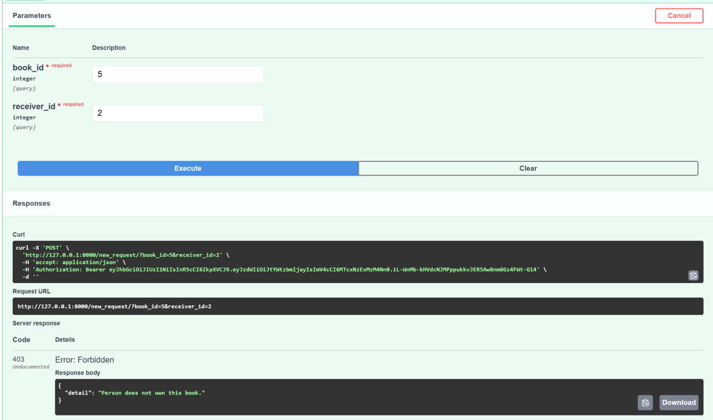

Работа с книгами
Для книг были созданы следующие эндпоинты:
/new_book- POST-запрос на создание книги/books- GET-запрос на получение информации о всех книгах с вложенными моделями жанра/books/{book_id}- GET-запрос на получение информации о книге с вложенными моделями жанра/change_book/{book_id}- PUT-запрос на изменение информации о книге/delete_book/{book_id}- DELETE-запрос на удаление книги
Для жанра были созданы следующие эндпоинты:
/new_genre- POST-запрос на создание жанра/genres- GET-запрос на получение информации о всех жанрах/genres_book/{genre_id}- GET-запрос на получение информации о конкретном жанре/book_genre_link- POST-запрос на связывание книги и жанра/book_genre_link/delete/{genre_id}/{book_id}- DELETE-запрос на удаление книги и жанра
Функционал владения книгой, а также реализация обмена:
/new_ownership- POST-запрос на создание владение читателем книги/ownerships- GET-запрос на получение информации о всех владениях книгами/ownership/delete/{book_id}/{owner_id}DELETE-запрос на удаление связи читателя и книги/new_request- POST-запрос на обмен книгой с другим пользователем/requests- GET-запрос на получение информации о всех запросах/requests/{request_id}/approve- POST-запрос на одобрение сделки/requests/{request_id}/reject- POST-запрос на отказ сделки
Примеры некоторых запросов
Вывод конкретной книги с вложенными жанрами:

Создание нового жанра:

Неудачная попытка направить запрос на обмен. Пользователь должен быть авторизирован в системе, а также направлять запрос другому пользователю, у которого есть желаемая книга. В процессе обмена книги другой пользователь не имеет возможности направить запрос на нее: 
Отказ на обмен. Книга остается у получателя запроса на обмен: